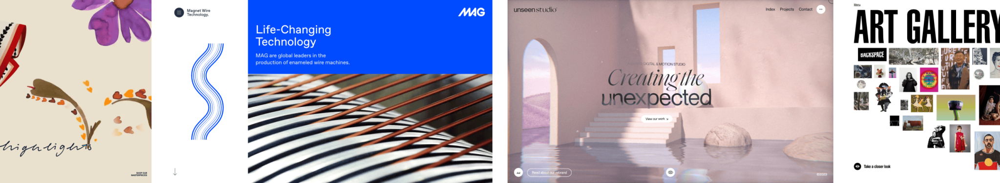
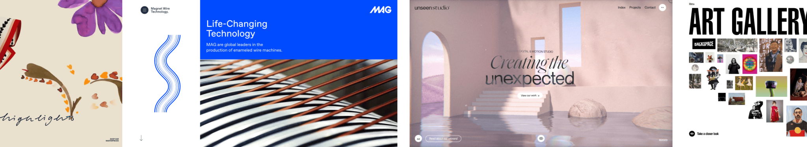

Conheça o WordPress
A plataforma de publicação de código aberto escolhida por milhões de sites no mundo todo, desde criadores e pequenas empresas até grandes corporações.
Leia o resumo dos destaques deste ano e depois acompanhe todas as apresentações no canal do WordPress no YouTube .
WordPress também está disponível em Português do Brasil.


 
